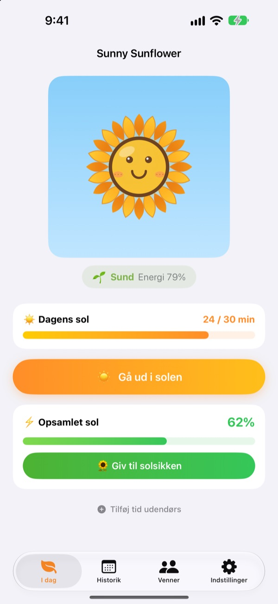
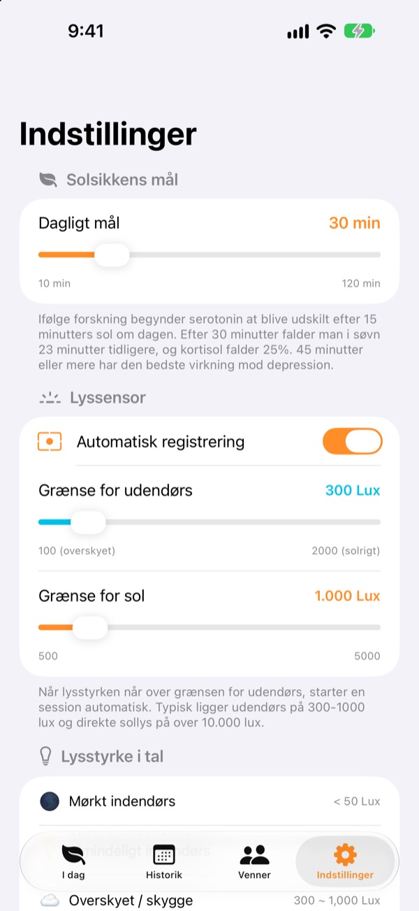
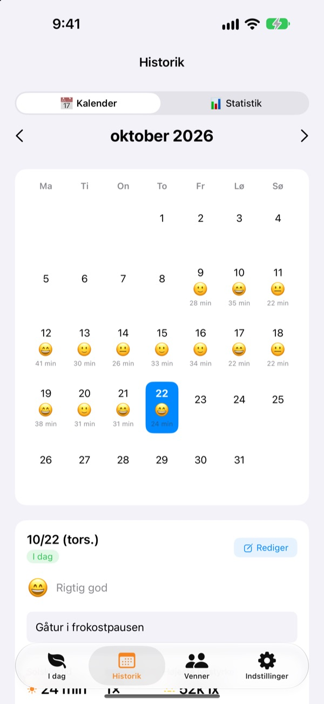
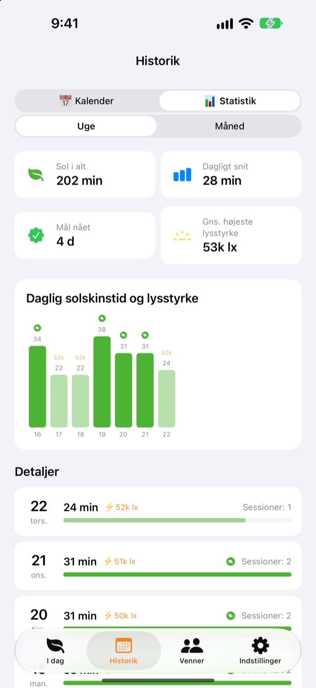

Dagens sol
får din solsikke til at gro
Bare du går udenfor, tæller din tid i solen op af sig selv. Giv solsikken det sollys, du har samlet, så står den frisk. Glemmer du den et par dage, begynder den at visne.
Alle funktioner er gratis. Dine data bliver på din enhed.

Saml lidt sol
Vælg hvor lyst der er og hvor længe, få noget sol, og giv det til en solsikke, der er begyndt at hænge med hovedet.
Hvor mange minutter sol fik du egentlig i dag?
Et par skridt på vej til arbejde, en hurtig tur ud efter frokost. Er man inde hele dagen, opdager man først om aftenen, at man næsten ikke har set dagslys. Sunny Sunflower viser din tid udenfor i tal, og din solsikke venter på morgendagens gåtur.
Gå ud, så måler den selv
Tryk på Gå ud i solen, og gå udenfor. Appen vurderer lyset omkring dig ud fra frontkameraets eksponeringsdata. Når lyset holder sig på udendørs niveau i cirka 30 sekunder, starter registreringen. Der bliver aldrig taget eller gemt billeder.
Bagefter tænder sensoren kun i 20 sekunder hvert 2. minut for at spare på batteriet.

Sol og humør, dag for dag
I kalenderen får hver dag sin tid i solen, en humør-emoji og en kort note. Var du ude uden at måle? Med Tilføj tid udendørs lægger du 5 til 120 minutter til.

Uge og måned på et øjeblik
Uge- og månedsstatistik viser, hvilke dage du nåede dit mål, og hvor meget sol du får i snit. Sæt et dagligt mål på 10 til 120 minutter, og se direkte på forsiden, hvor meget der mangler i dag.
Widgets på hjemmeskærmen og låseskærmen samt Dynamic Island viser dagens sol, og hvordan solsikken har det.

Kom i gang i tre trin
- 1
Sæt et dagligt mål
Det starter på 30 minutter. I indstillinger kan du vælge 10 til 120.
- 2
Gå ud i solen
Tryk på
Gå ud i solen, og gå ud med appen åben. Den spørger kun én gang om adgang til kameraet. - 3
Giv solsikken energi
Tryk på
Giv til solsikkenfor at gøre det opsamlede sollys til energi.
Sådan bliver lys til sol
- Under 300 lux
- Svagt lys: tæller ikke som tid i solen
- 300–1.000 lux
- Ude/overskyet: 1–3 % pr. 10 minutter
- 1.000–10.000 lux
- Sol: 3–33 % pr. 10 minutter
- Fra 10.000 lux
- Stærk sol: over 33 % pr. 10 minutter
- Opsamlet sol
- minutter × gennemsnitlig lux ÷ 3.000 (højst 100 % pr. gang)
- Solsikkens energi
- falder 2,5 % i timen, omkring 60 % i døgnet
Grænsen for udendørs kan sættes mellem 100 og 2.000 lux i indstillinger. Standard er 300 lux.
Spørgsmål og svar
Hvordan måler appen sol?
Den vurderer lysstyrken omkring dig (belysningsstyrken) ud fra frontkameraets eksponeringsdata. Når lyset holder sig på udendørs niveau et stykke tid, starter registreringen af sig selv. Der bliver ikke taget eller gemt billeder.
Bruger det meget strøm?
Når solen er bekræftet, er sensoren ikke tændt hele tiden. Den vågner i cirka 20 sekunder hvert 2. minut for at måle igen, og resten klarer en simpel timer.
Min solsikke visner hele tiden.
Solsikken mister 2,5 % energi i timen. Saml sol, og tryk på Giv til solsikken. På en klar dag er 15 til 20 minutter i direkte sol nok til at dække et helt døgn.
Jeg var ude, men intet blev registreret.
Brug Tilføj tid udendørs nederst på forsiden til at lægge 5 til 120 minutter til. Har registreringen svært ved at starte på overskyede dage, så sænk grænsen for udendørs i indstillinger.
Hvordan virker venne-funktionen?
Når du og en ven er tæt på hinanden (inden for cirka 10 m) og begge måler sol, forbinder I automatisk. Med en ny person skal I først bekræfte, at I tager sol sammen, derefter sker det af sig selv. Kronbladene bliver farverige og får deres egen farve tilbage over 3 dage, og jeres tid sammen gemmes på fanen Venner. I skal begge have appen og give adgang til Bluetooth og lokalt netværk.
Er det virkelig gratis?
Ja. Ingen reklamer, ingen køb, alle funktioner med. Kan du lide appen, kan du give drikkepenge, men de låser ikke noget ekstra op.
Kan jeg tage backup eller flytte mine data?
Alt bliver på enheden uden server, og de seneste 90 dage gemmes. Der er ingen separat eksport, men dine data er med i den almindelige iPhone-backup på iCloud eller computeren.
Hvordan sletter jeg alle data?
Tryk på Nulstil data i appens indstillinger, eller slet appen. Det kan ikke fortrydes.
Hvor melder jeg en fejl?
Skriv til adressen nedenfor, eller opret et issue på GitHub (github.com/M1zz/SunlightTracker/issues). Enhedsmodel, iOS-version og hvad der skete hjælper meget. Vi svarer som regel inden for få dage.
Spørgsmål eller idéer? Skriv til leeo@kakao.com.